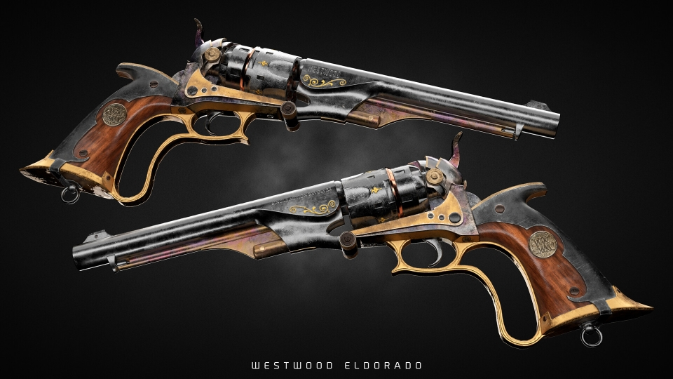
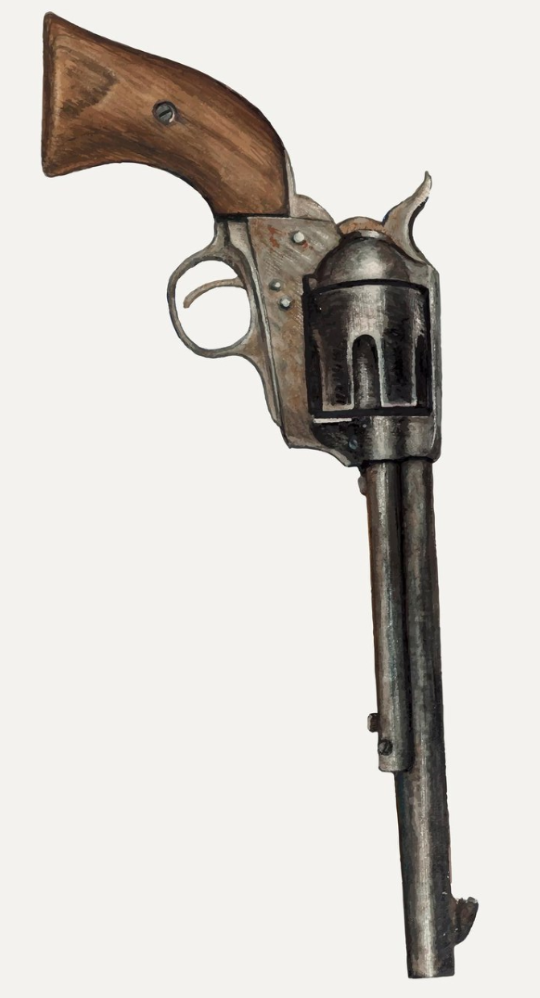

Good readers, Welcome to this months issue of Smith & Westwoods!
The star of this issue is of course the titular El Dorado, the newest premium revolver from one of our fellow subsidiary companies Westwood.
This beautiful piece of art, for it could only be considered a piece of art not a mere gun, was released just this week on the New Columbian markets. This being months before it's even hit the stage back in old Auropa and
shows the commitment Westwood is making to improving the safety of all those seeking freedom out there in the untamed west. With the rapid economic growth in Columbia its no surprise Westwood is seeking to take advantage
of the increasingly growing class of rich folk, and offering them the first real premium class revolver exclusive (for now) to the new continent. If you are looking to get your hands on one of these limited edition items
be expected to pay a premium, as a single piece costs around 8000G, or the equivalent in BC. But what do you get for such an extreme price? I bet even if you can't afford it you're curious about its performance, well lets get into it
THE Westwood El Dorado comes with everything you expect out of a Single Action revolver, with the standard 6 shot cylinder, a light weight of 1.7kg and a barrel lenght of 360mm its as easily handled as the classic. Now where
it really shines and why its so expensive is the materials its made of, the standard gold highlights offer effective channeling points for any skilled Gunmage and the obsidianite metal is light enough that any crackshot worth his salt will want
to have one in each hand.
But let's talk numbers, thats always the most important part. As you know we here at Smith and Westwood's have our patented dice system when it comes to calculating potential damage from a bullet hit from on of these
masterpieces. This gun pierces through enemies, dealing a devastating 3d6+2, that along with how easy they are to handle (a +2 to hit using our numerical accuracy system) means that your damage output will skyrocket with just one of these, let alone
one in each hand. The range sits comfortably at 80/320 feet. Now there is no assisted loading so unless you're extraordinarily trained in such manners as quick loading you will have to take that extra time to load after every sixth shot.
So how does this compare to the god ol' standard Kobold Single Action Army Revolver (pictured to the right)? Well while the ye olden classic will never be disparage in this magazine, it does undeniably not perform as well. With a decent 2d6 damage and no extra bonus to hit
it does at least offer equal range but without the added channeling properties, now it is light enough to dual wield so it does retain that advantage but its heavier than its luxuary counterpart so that should be considered. The biggest advantage
old reliable has is as always its cost. For as cheap as 17-20G or the equivalent in BC you can get your hands on a good quality Kobold Single Action. You could probably get away even cheaper if you purchase a used one though that may come with its
own quirks.
Either way it should be noted that all magically enhanced ammo is fully compatable with both weapons, as long as they are bought from a Smith owned store, both weapons will have no trouble firing of a thunder powered bullet or two
if you have the Blade Coin to spare for such things that is! The El Dorado does empower such bullets which is another neat feature but never be afraid to fire of a miniature fireball from your own KSAAR when you really need to drive home a point.
